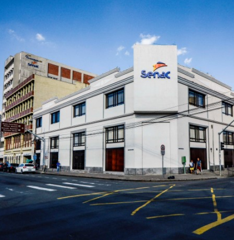

O Serviço Nacional de Aprendizagem Comercial
Senac é o principal agende de educação profissional voltado para o Comércio de Bens, Serviços e Turismo do País.
Com o objetivo de dar apoio ao comércio paranaense para a retomada econômica de 2021, o Senac PR está investindo mais de 18 milhões gratuitas, por meio do Programa de Bolsas Senac PR. Sendo que 1.045 vagas são destinadas para cursos técnicos a distância.
Vantagens de ser cliente
- Gestão transparente
- Comprometimento
- Qualidade
- Inclusão Social
- Oferta cursos gratuitos
O que dizem os clientes?
Este lugar oferece cursos com uma ótima estrutura e ótimos professores.
José Antônio